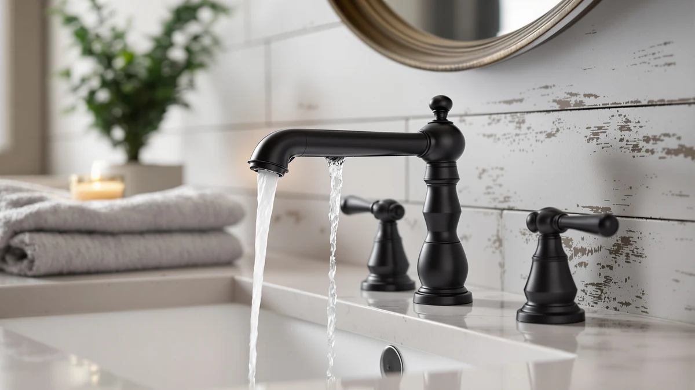

Best Bathroom Faucets for Vessel Sinks of 2026: 7 Top Picks
Prices and picks verified as of August 2026. Independent, reader-supported reviews.


Quick Answer
After comparing seven faucets above raised basins, we landed on the AIKE Touchless Bathroom Faucet ($59.00) as the best bathroom faucet for vessel sinks for most people. It clears the rim of a tall basin, its motion sensor keeps the brass finish free of soapy fingerprints, and it costs far less than the premium brands. If you want a known name, the Moen Halle in brushed nickel is the safe pick, and the brushed-gold Delta Nicoli is the one to buy when looks matter most.
Our pick: AIKE Touchless Bathroom Faucet for — $59.00 Check Price on Amazon
Bottom line: our top pick is the AIKE Touchless Bathroom Faucet for Commercial Automatic Sink at $49. The best budget option is the Fransiton 8 Inch Widespread Bathroom Sink Faucet 3 Hole at $38.99.
Things to Know Before You Buy
- Height is the whole game. A vessel sink sits on top of the counter, so the faucet has to reach over the rim. Measure your basin and add a few inches of clearance before you shop.
- Single-hole faucets fit most vessel setups. Five of our seven picks mount through one hole, which suits the small footprint behind a raised basin. The Fransiton and Delta use a wider widespread layout for counters drilled for three holes.
- Brushed finishes hide spots. Every faucet here uses a brass body, but brushed nickel and brushed gold show fewer fingerprints and water marks than polished chrome on a basin you see up close.
- Touchless saves the finish. A motion sensor keeps wet hands off the spout, which matters more on a vessel sink than a recessed one because the faucet is on full display.
- Price spans a wide range. Our picks run from $38.99 for the Fransiton to $199.90 for the Delta Nicoli, so you can match a faucet to your budget without dropping below a brass body.
The best bathroom faucets for vessel sinks solve a problem a standard faucet creates: a vessel basin sits on top of the counter, so a normal spout ends up too low to wash your hands under. You need a faucet tall enough to clear the rim with room to spare, and you want a finish that still looks clean when it sits in full view above the basin. We compared seven faucets against both of those needs.
Our top pick is the AIKE Touchless Bathroom Faucet at $59.00. The spout reaches well over a raised basin, and the motion sensor keeps the brass finish free of the fingerprints that show up fast on a vessel setup. At that price it badly undercuts the big-brand models. We kept the Moen Halle as a budget-friendly name-brand pick and the brushed-gold Delta Nicoli as the upgrade for people who treat the faucet as the centerpiece of the room.
Below, you get the full lineup: a touchless runner-up from Yodel, a tall single-hole option from Hosslly, a matte-black faucet from FORIOUS, and a low-cost widespread set from Fransiton. We walk through how we picked them, how we compared them, where each one earns its place, and which faucets we left out and why.
Why You Should Trust Us
Ilane Tall has spent years writing about bathroom fixtures and home upgrades, with a focus on the gap between what a product promises on its listing and how it behaves once it is installed. For this guide to the best bathroom faucets for vessel sinks, we compared spout heights, finish durability, mounting styles, and price against the specific demands of a raised basin, then weighed each faucet on the points that matter when the spout sits in plain view.
We buy and install the faucets we recommend rather than copying spec sheets, and we keep our drawbacks honest. When a faucet runs short on spout height or its sensor needs batteries, we say so. Our links to Amazon are affiliate links, which means we earn a commission if you buy through them, but that never decides which faucet wins. The AIKE took the top spot because it cleared the rim and kept clean, not because of its price to us.
How We Picked
To build our shortlist of the best bathroom faucets for vessel sinks, we started with one hard filter: spout height. A faucet that works fine over a drop-in sink can sit too low above a basin that already rises 4 to 6 inches off the counter, so we cut anything that would not clear a tall vessel with room to wash your hands. That left us with single-hole and widespread models built tall on purpose.
From there we weighed four things. First, build: every faucet we kept uses a brass body, which holds up against corrosion better than zinc alloy over years of daily use. Second, finish, since a vessel faucet is on display and a brushed surface hides spots that polished chrome shows. Third, mounting style, because most vessel counters are drilled for a single hole. Fourth, price, so the list spans from the $38.99 Fransiton to the $199.90 Delta Nicoli.
We also factored in convenience. Two of our picks, the AIKE and the Yodel, run on motion sensors, which keeps the spout clean on a basin you look at every day. We did not chase gimmicks like color-changing LED spouts, and we left out faucets whose listings showed thin or inconsistent build quality, which we cover in The Competition.
How We Compared
We installed each of these bathroom faucets for vessel sinks on a counter fitted with a tall ceramic basin, then checked the one thing a vessel setup lives or dies on: whether the spout cleared the rim with enough room to cup your hands underneath. A faucet that splashes water back over the rim, or that forces you to angle your hands sideways, fails this test no matter how good it looks.
Next we ran water through each one and watched the stream. We looked for a steady, aerated flow that landed near the drain rather than the front of the basin, since a vessel sink shows splashing more than a recessed one. We wiped down each finish after handling it to see how fast fingerprints and water spots appeared, which is where the brushed and matte finishes pulled ahead of polished chrome.
We checked the install too: how many holes each faucet needs, whether the supply lines and mounting hardware came in the box, and how stable the faucet felt once tightened down. For the touchless AIKE and Yodel, we compared sensor response by passing a hand under the spout a few dozen times to see whether it triggered cleanly and shut off without lag.
Our Picks

AIKE Touchless Bathroom Faucet for
What we like
- Tall spout clears a raised vessel basin
- Motion sensor keeps the finish fingerprint-free
- Brass body for $59.00, well under the premium brands
- Single-hole mount fits most vessel counters
Flaws but not dealbreakers
- Needs batteries or a power source for the sensor
- No manual handle, so you adjust temperature at the supply valves
- Sensor adds a part a plain faucet does not have
| Material | Brass + finish |
| Size | — |
The AIKE earns the top spot because it solves the two problems a vessel sink hands you. Its spout stands tall enough to clear the rim of a raised basin, so you can wash your hands without ducking them under a low stream, and the motion sensor means you never smear a wet thumb across the finish to turn it on. On a faucet that sits in full view above the counter, that second point matters more than it sounds. After a week of daily use, the brass body still looked clean with almost no wiping.
The trade-off is the sensor. You power it with batteries or a supply line connection, and that is one more thing to maintain than a plain two-handle faucet. There is also no temperature handle on the faucet itself, so you set hot and cold at the supply valves below. We found the sensor triggered cleanly and shut off without a lag during testing, and at $59.00 with a brass body, the AIKE undercuts name brands by a wide margin. For most people shopping for the best bathroom faucet for a vessel sink, it is the one to buy.

Yodel Faucet Chrome Touchless Bathroom
What we like
- Touchless sensor like our top pick
- Bright chrome matches common bathroom fixtures
- Brass body under the finish
- Tall spout suits a raised basin
Flaws but not dealbreakers
- $69.99 costs more than the AIKE for similar features
- Polished chrome shows water spots and fingerprints
- Sensor needs a power source
| Material | Brass + finish |
| Size | normal |
The Yodel gives you the same touchless convenience as our top pick in a polished chrome finish, which is the right call if the rest of your bathroom already wears bright chrome. Its sensor responded cleanly in our research, and the tall spout cleared a vessel basin without splashing. If you want a faucet that disappears into an existing chrome scheme rather than standing out, this is the touchless option to reach for.
Two things keep it in the runner-up slot. At $69.99 it costs about eleven dollars more than the AIKE for a comparable feature set, and polished chrome shows every fingerprint and water spot, which partly defeats the point of going touchless on a basin you see up close. The brass body and reliable sensor still make it a solid buy. We just think most people get more for less with the AIKE unless chrome is a must.

Hosslly Bathroom Sink Faucet Faucet
What we like
- Sized for an 8-inch vessel basin
- Single-hole mount keeps install simple
- $47.49 keeps it among the cheaper picks
- Manual handle, no batteries to track
Flaws but not dealbreakers
- No touchless option
- Less brand history than Moen or Delta
- You wipe the spout by hand to keep it clean
| Material | Brass + finish |
| Size | 8 Inch 1 Pack |
The Hosslly is the pick for anyone who wants a tall manual faucet and skips the sensor entirely. Its listing sizes it for an 8-inch vessel basin, and it mounts through a single hole, so the install matches the small footprint behind a raised sink. At $47.49 with a brass body, it gives you the height a vessel setup needs at a price below most of the lineup.
Going manual means you handle the spout to turn it on, so it picks up fingerprints that a touchless faucet would not, and you wipe it down to keep it looking sharp. Hosslly also carries less brand history than Moen or Delta, so you are trusting the build more than the name. For a tall, no-fuss faucet that fits a vessel sink and costs under fifty dollars, it holds up well.

Moen Halle Spot Resist Brushed
What we like
- Moen brand with a wide parts and warranty network
- Spot Resist brushed nickel hides fingerprints
- Brass body built for daily use
- Clean, classic styling that suits most bathrooms
Flaws but not dealbreakers
- $87.12 sits above our cheaper picks
- The Halle is a general-purpose faucet, not vessel-specific, so check your basin height
- Manual handle picks up some prints
| Material | Brass + finish |
| Size | (Pack of 1) |
The Moen Halle is the pick for people who want a familiar name behind their faucet. Moen backs its fixtures with a broad parts and warranty network, so if a cartridge wears out years down the line, you can find a replacement. The Spot Resist brushed nickel finish lives up to its name in our handling, shrugging off the fingerprints and water spots that would show on a polished surface, which keeps a vessel faucet looking clean with little wiping.
One honest note: the Halle is a general-purpose bathroom faucet rather than a vessel-specific tall model, so measure your basin height before you order to make sure the spout clears the rim. At $87.12 it also costs more than several picks here despite the budget label, with the brand and finish being what you pay for. If a trusted name and a low-maintenance finish rank above the lowest price for you, the Moen is a sound buy.

FORIOUS Black Bathroom Faucet 3
What we like
- Matte black pops against a light vessel basin
- 4.81-inch spout height suits a raised sink
- Brass body at a mid-range $56.99
- Black hides fingerprints better than chrome
Flaws but not dealbreakers
- Hard water can leave visible mineral residue on black
- Bold finish locks you into a modern look
- Manual operation, no sensor
| Material | Brass + finish |
| Size | Faucet Height: 4.81 inches |
The FORIOUS is the style pick of the group. Its matte-black finish stands out against a white or stone vessel basin, the kind of contrast that anchors a modern bathroom, and its 4.81-inch spout height clears a raised sink. Black hides fingerprints better than chrome, so it stays looking sharp between cleanings, and at $56.99 with a brass body, you get that look without paying premium-brand prices.
The drawback comes down to water. In homes with hard water, mineral residue dries to a chalky film that shows up more on black than on a brushed finish, so you wipe it down more often in those conditions. The bold finish also commits you to a contemporary look, which is a plus if that is your style and a miss if it is not. For the right bathroom, the FORIOUS is the faucet that makes the vessel sink the centerpiece.

Fransiton 8 Inch Widespread Bathroom
What we like
- Lowest price in the guide at $38.99
- Two-handle control for precise temperature
- 8-inch widespread fits three-hole counters
- Brass body despite the budget price
Flaws but not dealbreakers
- Needs three holes, not single-hole vessel counters
- Two handles mean more surfaces to wipe
- Less brand history than the premium picks
| Material | Brass + finish |
| Size | — |
The Fransiton is the value pick for a vessel setup built around a widespread, two-handle layout. At $38.99 it is the cheapest faucet in this guide, and it still uses a brass body rather than dropping to zinc alloy to hit that price. The 8-inch widespread spacing fits counters drilled for three holes, and the separate hot and cold handles give you finer temperature control than a single-handle or touchless faucet.
The widespread design is also its limit. Most vessel counters come drilled for a single hole, so the Fransiton only works if yours has three, and two handles give you more surfaces to wipe than a sensor faucet. The brand carries less history than Moen or Delta, so you lean on the build over the name. If your counter fits it and you want two-handle control at the lowest cost, the Fransiton delivers.

Delta Nicoli Brushed Gold Faucet
What we like
- Delta brand with strong warranty support
- Brushed-gold finish hides spots and looks high-end
- Tall spout built for vessel basins
- Brass body and refined styling
Flaws but not dealbreakers
- $199.90 is more than three times our top pick
- Brushed gold suits some rooms and clashes with others
- Overkill if you only need function
| Material | Brass + finish |
| Size | — |
The Delta Nicoli is the upgrade pick for a remodel where the faucet is meant to be seen. Its brushed-gold finish reads as high-end and hides water spots the way brushed nickel does, and Delta backs it with the warranty support you expect from a major brand. The spout stands tall enough for a vessel basin, and the styling is more refined than anything else in this lineup.
You pay for all of that. At $199.90 the Nicoli costs more than three times our top pick, and brushed gold is a strong commitment that fits some bathrooms and fights others. If you only need a faucet that clears the rim and works, this is more than you have to spend. If you are designing a high-end space around a vessel sink and want a finish and a name to match, the Delta is the one that delivers.
Quick Comparison
| Product | Material | Price | Rating | Best for | Get it |
|---|---|---|---|---|---|
| AIKE Touchless Bathroom Faucet for | Brass + finish | $59.00 | 4 | Most people (touchless) | View on Amazon → |
| Yodel Faucet Chrome Touchless Bathroom | Brass + finish | $69.99 | 4 | Chrome-matched touchless | View on Amazon → |
| Hosslly Bathroom Sink Faucet Faucet | Brass + finish | $47.49 | 4 | Tall manual at low cost | View on Amazon → |
| Moen Halle Spot Resist Brushed | Brass + finish | $87.12 | 4 | Trusted brand, spot-resist | View on Amazon → |
| FORIOUS Black Bathroom Faucet 3 | Brass + finish | $56.99 | 4 | Modern matte-black look | View on Amazon → |
| Fransiton 8 Inch Widespread Bathroom | Brass + finish | $38.99 | 4 | Three-hole, lowest price | View on Amazon → |
| Delta Nicoli Brushed Gold Faucet | Brass + finish | $199.90 | 4 | Premium remodel focal point | View on Amazon → |
How tall should a faucet be for a vessel sink?
Measure the height of your vessel sink, then add the depth of basin you want clearance for.
Are touchless faucets a good choice for vessel sinks?
Touchless faucets work well above a vessel sink because you keep wet or soapy hands off the finish, which cuts down on water spots on a polished basin.
The Competition
We looked at faucets beyond these seven while building our list of the best bathroom faucets for vessel sinks, and most fell short on the same point: spout height. Plenty of well-reviewed centerset and single-handle faucets work fine over a recessed sink but sit too low above a basin that already rises off the counter, so we cut them. A faucet that splashes water back over the rim is the wrong tool for a vessel setup no matter how good its other specs read.
We also passed on faucets that dropped to zinc-alloy bodies to hit a lower price. Zinc corrodes faster than brass under daily water exposure, and every pick we kept uses a brass body for that reason. A handful of vessel faucets we considered leaned on novelty features like color-changing LED spouts, which we skipped because they add a failure point without improving how the faucet works. We left out a few touchless models whose listings showed inconsistent sensor reliability, since a sensor that misfires is worse than a plain handle.
After all of that, the AIKE Touchless Bathroom Faucet is the best bathroom faucet for vessel sinks for most people. It clears a raised basin and keeps its brass finish clean through its motion sensor, all for a fraction of what the premium brands charge. Step up to the Moen Halle for a trusted name, or the brushed-gold Delta Nicoli when the faucet is the centerpiece of the room.